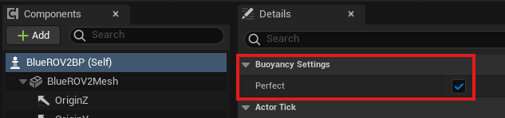

Developing Agents
Because agents have components in Python, C++, and UE5, creating agents is a rather involved process. This guide will walk you through each step of creating a new agent for HoloOcean.
General Agents
General agents do not have buoyant properties. They are the simplest agents to create. We will walk you through the process of creating a new agent by copying and modifying the TurtleAgent.
Python
First, open holoocean/client/src/agents.py. To create a new agent, copy the TurtleAgent
class and edit it to reflect your new agent. You’ll need to edit the following:
Class name
agent_type
Anything related to the controls. This includes all the constants, and
control_schemes()
Make sure you put the number of inputs your agent will have in ContinuousActionSpace in the
return.
You should end up with something like the following:
class CustomAgent(HoloOceanAgent):
"""A simple custom bot.
Inherits from :class:`HoloOceanAgent`."""
# constants in CustomAgent.h
__MAX = 160.0
__MIN = -__MAX
agent_type = "CustomAgent"
@property
def control_schemes(self):
low = [self.__MIN]*4
high = [self.__MAX]*4
return [("[first, second, third, fourth]", ContinuousActionSpace([4], low=low, high=high))]
def get_joint_constraints(self, joint_name):
return None
def __repr__(self):
return "CustomAgent " + self.name
def __act__(self, action):
np.copyto(self._action_buffer, np.array(action))
np.copyto(self._action_buffer, action)
Lower in the same agents.py file, in the AgentDefinition class, there is a dictionary mapping
names to Python classes. Add an entry for your new class, something like
"CustomAgent": CustomAgent,. The name should match agent_type set in your class.
C++
In holoocean/engine/Source/HoloDeck/Agents, you will need to create four new files for your agent.
Duplicate the following four TurtleAgent files listed below, and rename them accordingly:
TurtleAgent.cpp -> CustomAgent.cpp
TurtleAgent.h -> CustomAgent.h
TurtleAgentController.cpp -> CustomAgentController.cpp
TurtleAgentController.h -> CustomAgentController.h
Make sure the .cpp files are created in the Private folder, and .h files are made in the public folder.
In CustomAgent.h, do the following:
Change
#include "TurtleAgent.generated.h"to#include "CustomAgent.generated.h"Change
class HOLODECK_API ATurtleAgent : public AHolodeckAgenttoclass HOLODECK_API ACustomAgent : public AHolodeckAgentChange
ATurtleAgent();toACustomAgent();In the line,
unsigned int GetRawActionSizeInBytes() const override { return 2 * sizeof(float); };, change the number 2 to however many inputs your agent hasIn the line
float CommandArray[2];change the 2 to however many inputs your agent has
CustomAgent.cpp is where the bulk of an agent’s behavior is defined, including custom dynamics, reactions to inputs, and so on. Change the following for CustomAgent.cpp:
Change
#include "TurtleAgent.h"to#include "CustomAgent.h"Change all instances of
ATurtleAgenttoACustomAgentAdd code for anything you want your agent to do and how it responds to inputs in the
Tick(float DeltaSeconds)function
In CustomAgentController.h, do the following:
Change
#include "TurtleAgent.h"to#include "CustomAgent.h"Change
#include "TurtleAgentController.generated.h"to#include "CustomAgentController.generated.h"Change all instances of
ATurtleAgentControllertoACustomAgentController
In CustomAgentController.cpp, do the following:
Change
#include "TurtleAgentController.h"to#include "CustomAgentController.h"Change all instances of
ATurtleAgentControllertoACustomAgentController
Compile the C++ code using Visual Studio or the Unreal Editor. To do this with UE, open the
holodeck.uproject file in Unreal Editor and click the compile button at the bottom right of the
screen. Fix any errors until the code compiles successfully.
Unreal Engine
Navigate to Content/HolodeckContent/Agents in the content browser. Create a new folder for your
agent, and go into it. You will need a static mesh and a blueprint for your agent.
For your agent static mesh, do the following:
Import your mesh into your new folder
Edit the mesh to add a socket named “Viewport” so that the camera can spawn correctly. If you wish to use other sensors, add other sockets for the location of those sensors.
For your agent blueprint, do the following:
Right click and select to create a blueprint class. You will get a dialog asking you to choose your parent class. Choose your C++ class (
CustomAgent) from the previous step, and name your new blueprint something like CustomAgentBpInsert any custom meshes for your agent. For help with this step, find tutorials online for making custom pawns in UE
Make sure the “Agent Name” matches what you listed in Python
Connect your controller to the “AI Controller Class”
Check “Simulate Physics” and uncheck “Enable Gravity”
Note
If you have any issues with connecting your agent, please compare against other agent meshes and blueprints found in the Content/HolodeckContent/Agents folder.
Finally, you need to connect your Python class and C++ code to the UE pawn.
Navigate to
Content/in the content browser and open up HolodeckGameModeBPFind the entry called “Agent Bp Map” on the right under the Default section. Expand it, and insert a new entry
On the left choose whatever you put as agent_type in your code before, and on the right, choose the blueprint (CustomAgentBp) that we just created
Repackage your environment (see Developing Environments). You should now be able to use your new agent!
Buoyant Agents
The AHolodeckBuoyantAgent class was made to remove the need to re-implement buoyancy dynamics for
each AUV in HoloOcean. We implement our buoyancy in C++ instead of in UE blueprints. Anything
set in the blueprint (like mass or COM offset) will be overriden in C++.
Creating a custom buoyant agent mostly follow the same steps as above, with the exception that the
class needs need to inherit from AHolodeckBuoyantAgent instead of AHolodeckAgent. It is useful
to copy files from AHoveringAUV instead of ATurtleAgent.
Necessary Variables
The following variables MUST be set in the C++ portion of your agent definition, either in your class
constructor or in the InitializeAgent function before Super::InitializeAgent() is called.
float Volume;
float MassInKG;
FVector CenterBuoyancy;
FVector CenterMass;
The CenterBuoyancy and CenterMass variables are FVector objects that define the centers of mass and buoyancy of the vehicles. They are defined relative to the origin of the UE asset mesh origin in left-handed coordinates. If the mesh frame is located at the center of mass, the CenterMass variable can be set to all zeros.
Within your agent blueprint, make make sure you enable “Perfect” for the Buoyancy Setting.
Extra Variables
These variables can be set to customize various aspects of how surface buoyancy is used, although all of them will be calculated if you don’t.
Surface Buoyancy is calculated by random sampling points inside of the “Bounding Box” of your vehicle, then checking how many of them are above the surface in real time. You can see this bounding box by opening your static mesh in UE5 and clicking “Bounding Box”. Alternatively, if you want to sample offline and store the points, you can set them explicitly by hand. This is a crude method for calculating buoyant force, but works well when high fidelity isn’t necessary.
int NumSurfacePoints = 1000;
FBox BoundingBox = FBox();
TArray<FVector> SurfacePoints;
float SurfaceLevel = 0;
NumSurfacePoints Number of points to sample. May need to be larger/smaller based on robot size.
BoundingBox is the bounding box around your vehicle. It’s calculated automatically by the mesh
if it’s not set. You can set this by hand if the auto-calculated one is too large.
SurfacePoints are the sampled points. Set explicitly if you don’t want to use the bounding box
method. NOTE: These are stored with an offset for CenterMass pre-applied to reduce complexity.
SurfaceLevel is the water level. For all of our environments, this has been set to 0.
Debugging Tools
To be able to visualize the bounding box and surface points to make sure they’re placed currently,
you can use the inherited functions ShowBoundingBox() and ShowSurfacePoints() functions in
your agent’s tick method.